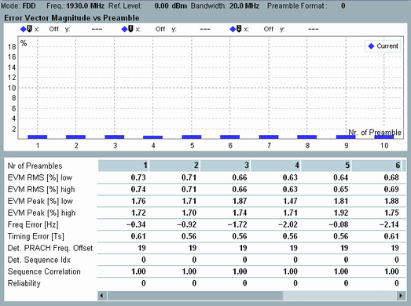

- "Error Vector Magnitude vs Preamble"
- "Power vs Preamble"
Each of these multi-preamble views shows a diagram and a statistical overview of results.

The diagram shows results for a configurable number of preambles (up to 32), labeled 1 to n. The preambles are captured within one measurement interval, using a configurable periodicity. A preamble is captured every 10 ms or every 20 ms.
- "Error Vector Magnitude vs Preamble":
The diagram displays EVM RMS values. For each preamble, either the result determined for low EVM window position or the result determined for high EVM window position is shown - whichever is the higher. So for this diagram, the setting "EVM Window Position" is ignored. - "Power vs Preamble":
The diagram displays TX power values (received power, RMS averaged over all samples within the preamble duration).
The table below the diagram shows additional results. Each column corresponds to one preamble with the preamble label indicated as column title.
The upper rows correspond to the results presented in the "TX Measurement" view. For a description, see "View TX Measurement".
The row "Reliability" provides a reliability indicator for each preamble. For a description of the individual values, see "Reliability Indicator".
For a description of the lower rows, see "Common View Elements".